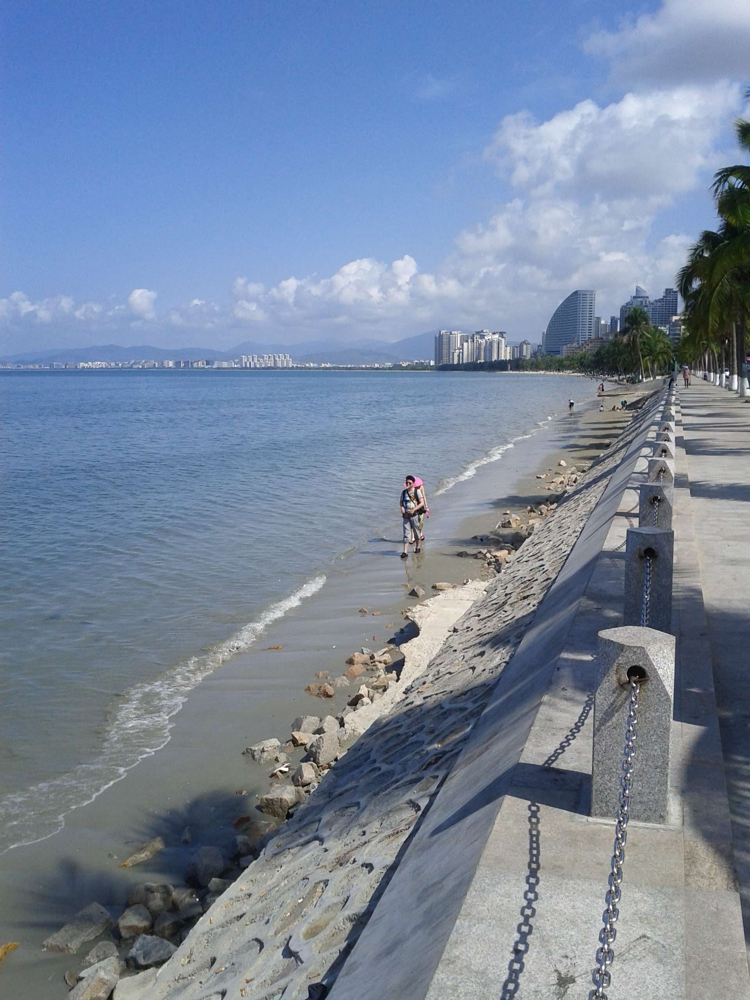

长沙出发｜海南混合交通深度旅行方案
网页版本
项目根目录包含可直接部署到 GitHub Pages 的响应式静态网站：
index.html：网站入口styles.css：桌面与手机端设计script.js：移动导航、物资清单本地保存和动态预算research.css与各目录下的.html：把完整调研以正常网页排版展示，不再把访客送到裸 Markdown 页面
本地预览可使用任意静态文件服务器打开项目根目录。网页内容以本目录中的完整 Markdown 调研为依据。
这套方案按两人出行设计，核心不是“全程骑摩托”，而是：
租汽车完成机场、城市和环岛长距离移动；只在万宁等经复核允许通行的沿海片区，短租一天正规摩托车。海口、三亚市区不骑，摩托车不上高速。
主方案为 12 天 11 晚海南环岛，以晴天、摄影、冷门海岸、蜈支洲岛、冲浪为重点；自由潜可以加进来，但若主要目标是稳定拿下 AIDA2，建议与海南旅行拆开，在东莞深池另报课程。

文件导航
- 执行摘要
- 12 天环岛混合交通路线
- 长沙往返机票、汽车与摩托租赁
- 最佳季节与晴天策略
- 融旅酒店筛选与住宿布局
- 蜈支洲岛与海上项目
- 自由潜水深度调研：海南还是东莞
- 冲浪点与课程选择
- 风光、人文、海边人像和机车照片计划
- 12 天详细物资清单
- 两人预算评估
- 真实评价与证据索引
- 图片来源与许可
先给结论
- 时间：本次按 2026 年 8 月 15 日前后出发执行。当前略倾向 8 月 14 日抵达；若仍在 8 月 15 日出发，选下午或晚班并把当天只作为抵达日。8 月 12 日再按 72 小时预报决定环岛方向。
- 天数：真正环岛并兼顾下午出门、摄影和天气机动，建议 12 天；9 天只能做海口进、三亚出，主动放弃西线。
- 交通：汽车是主交通。海口、三亚城市段和跨城段都用汽车；摩托仅安排 1—2 天，万宁为第一选择。
- 旅行团：不需要常规一日团。蜈支洲岛自己买官方票，冲浪和自由潜购买教练服务即可。
- 自由潜：会法兰佐不等于已经具备 AIDA2 的水性、安全、救援和动态闭气能力。你可以直接报 AIDA2，但若想稳妥考证，东莞 46 米室内深池的可控性明显优于海南开放水域。
- 预算：两人 12 天、不考自由潜，较现实为 2.0 万—2.3 万元；若一人加 AIDA2，准备 2.3 万—2.7 万元。
使用提醒
航班、酒店特权价、海况、禁摩边界和课程价格都属于动态信息。本文给的是截至 2026-08-02 的公开资料快照与决策方法；实际预订前按文档中的核验清单再确认一次。